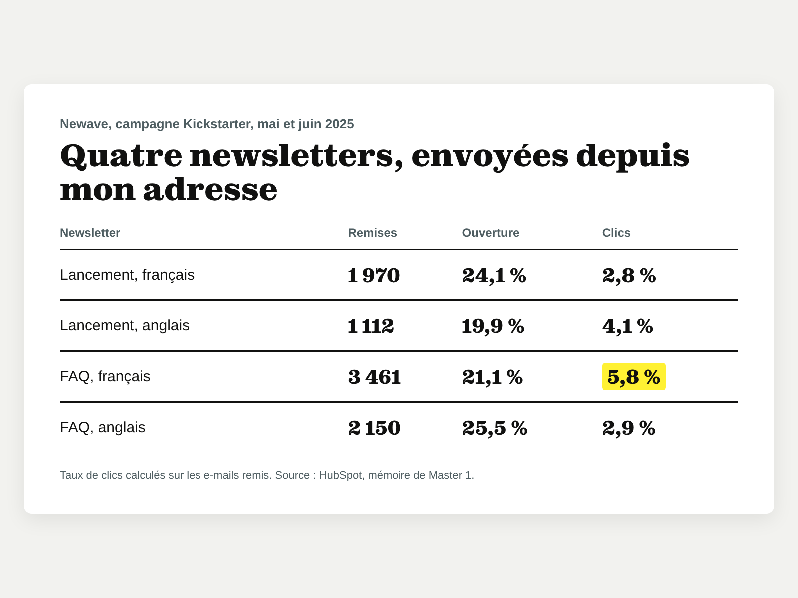
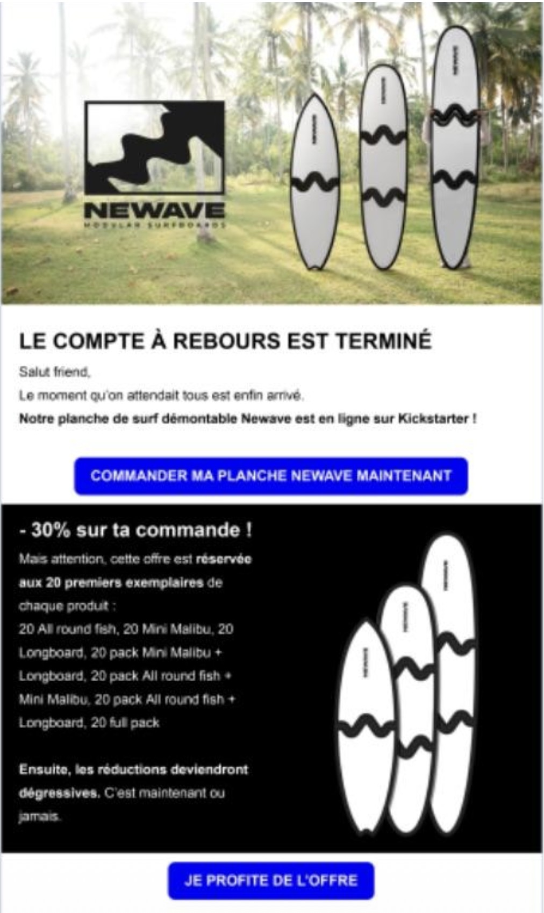
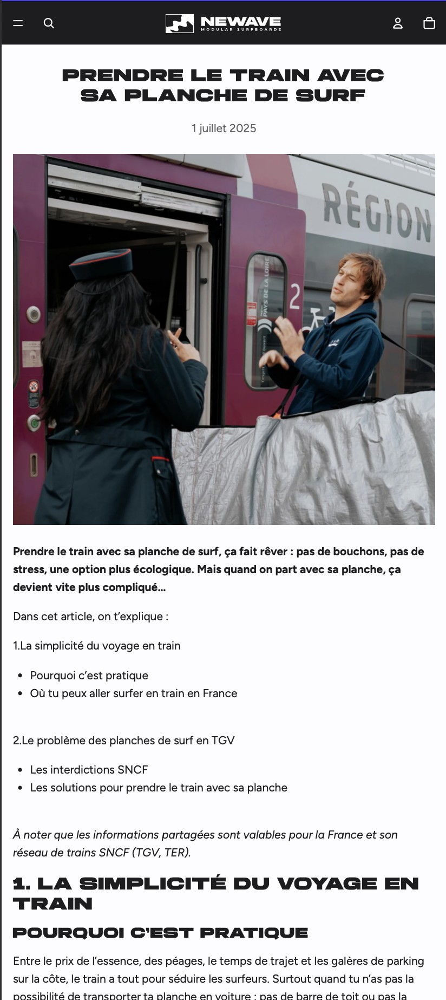
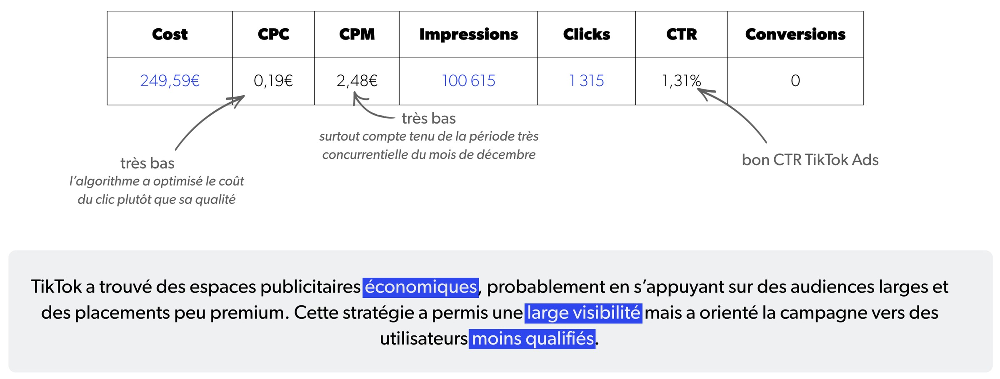
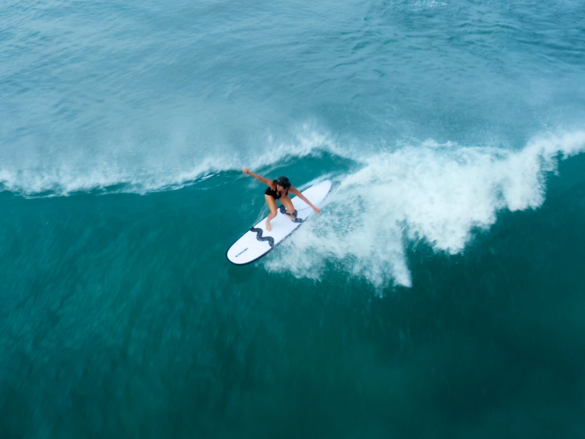
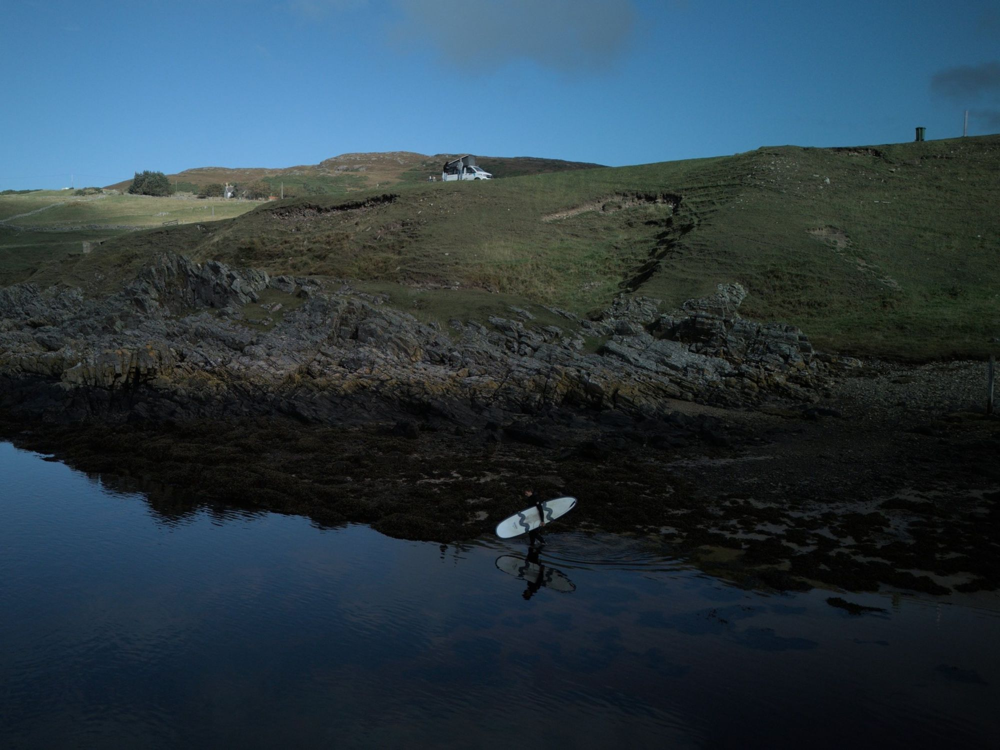
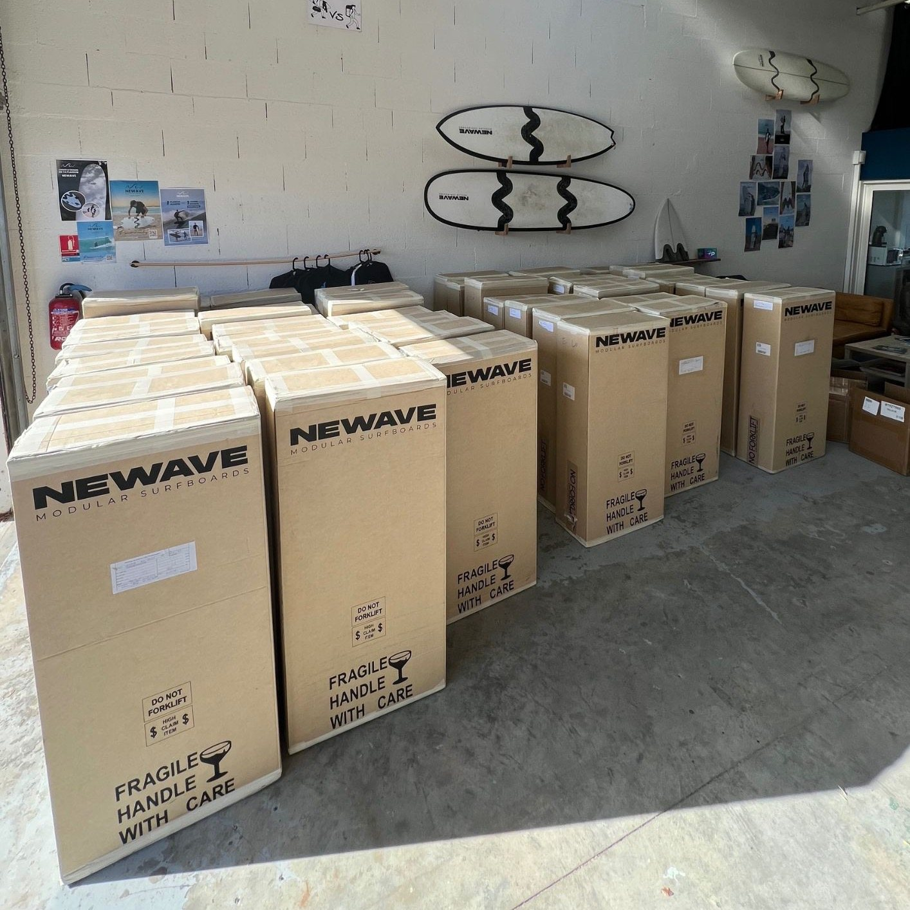

Faire accepter une planche en trois morceaux à ceux qui la trouvent ridicule
- Contexte
- Start-up vendéenne, planches de surf démontables et modulaires, système de fixation breveté.
- Rôle
- Stage en marketing digital et communication, puis campagne TikTok Ads menée à quatre pour la marque, en Master 2.
- Durée
- Stage de 6 mois en 2025, campagne de douze jours en novembre et décembre 2025.
- Question
- Comment une start-up peut-elle s’appuyer sur une stratégie de marketing digital pour faire adopter un produit innovant par une communauté experte et sceptique ?
- Livrables
- Contenus du site, newsletters, plan de diffusion d'un film, campagne TikTok Ads.
Constat
Lecture stratégie« Un produit peut être objectivement innovant et pourtant rejeté s'il n'est pas perçu comme légitime par la communauté. »Mémoire M1, 2025
Le produit répond à un vrai problème : transporter et stocker facilement une planche de deux à trois mètres. Mais pour un surfeur, une planche est un objet d'une seule pièce, façonné par un artisan, le shapeur. Une planche qu'on divise heurte ce que Rogers appelle la compatibilité perçue.
Newave avait convaincu les premiers acheteurs, ceux qui commandent sans avoir essayé. Il restait la majorité, qui veut des preuves, alors que personne ne possédait encore la planche : ni bouche-à-oreille, ni avis client, ni contenu d'utilisateur.
Freins identifiésLa solidité, la performance, l'attachement au matériel classique et l'absence de preuve sociale.
« Planche de kook. »Commentaire sous une publication de la marque, 2025. Un « kook », dans le jargon du surf, c'est celui qui ne maîtrise ni son matériel ni les règles à l'eau.
Surfeuse moi-même et convaincue par le concept, je ne soupçonnais pas l'ampleur des réticences. Chaque jour, en modérant les commentaires et les messages privés, je lisais la même peur : qu'elle cède dans la vague.
Sur la plage, j'ai compris d'où venait ce rejet : pour un surfeur, une planche est monobloc et on en ajoute à son quiver (la collection de planches) au fil des années. Les nouvelles pratiques, comme le wingfoil ou l’efoil, sont mieux acceptées, mais toucher à la planche elle-même, beaucoup moins.
Comment la planche s’assemble-t-elle ?
Une planche en trois morceaux, ce n'est pas une vraie planche de surf !
Parti pris
Lecture stratégie« Convaincre sans renier les codes. »Mémoire M1, 2025
Pendant le Kickstarter, la marque avait tout misé sur le produit : arguments techniques, offres limitées, budget publicitaire important. Pour la sortie du film Celtic Seas'on, j'ai proposé l'inverse : montrer la planche dans son contexte, et non plus comme un simple produit. Avec le directeur commercial, nous avons choisi de publier des extraits du film, une option que nous n'avions pas envisagée au départ.
Six mois plus tard, sur TikTok, l'objectif changeait : faire découvrir la marque à un public britannique qui ne la connaissait pas forcément. Trois vidéos aux formats variés, un budget global plutôt que quotidien, un paiement au clic.
« Comment résiste-t-elle à la puissance des vagues ? »Question entendue sur le stand et en messages privés, 2025
À cette question, rien ne répond mieux que la planche elle-même. Aux Championnats de France universitaires de surf, à Anglet, j'ai animé le stand et aidé à organiser les essais : les surfeurs démontaient la planche, la remontaient et allaient à l'eau avec.
En ligne, j’ai répondu à chaque mail, message privé et commentaire, et j’ai envoyé les newsletters depuis mon adresse professionnelle, pour qu’on puisse me répondre directement.
Impact
Lecture stratégie« C'est en étant à la fois visible, crédible et accessible que Newave pourra franchir le cap de l'adoption massive. »Mémoire M1, 2025
Ce que ces chiffres ne disent pasLes vidéos de la campagne n'ont pas été lancées au même moment, et les clics n'étaient pas reliés aux ventes du site. La campagne a mesuré la portée et l'intérêt suscité, pas l'efficacité d'un format sur un autre. Les newsletters, elles, ont été beaucoup ouvertes mais peu cliquées : elles informent, elles ne déclenchent pas l'achat d'un produit à plus de 800 €.
« On voit ce qu'il est possible de faire avec une planche démontable, et qu'elle ne se démonte pas dans des vagues explosives. »Mémoire M1, 2025, à propos du film Celtic Seas'on
Le film des fondateurs, dont j'ai conçu les affiches et le plan de diffusion, a été sélectionné au Festival International du Film de Surf d'Anglet, puis projeté dans trois magasins Boardriders, à Saint-Jean-de-Luz, Capbreton et Bordeaux. Sous les publications, sceptiques et curieux se répondaient entre eux : un débat parfois vif, qui faisait exister la planche aux yeux de la communauté.
Une limiteLes planches du film n'étaient pas celles de la série finale : elles ne portaient ni le nouveau logo ni le design noir et blanc livré aux clients. Pour un surfeur déjà méfiant, cet écart entre l'image et le produit reçu peut semer le doute.
Et depuis
Newave compte aujourd'hui 27 000 abonnés sur Instagram et un compte entier consacré aux contenus de sa communauté : la preuve sociale qui manquait en 2025 existe désormais. La marque continue d'innover, avec une planche qui s'assemble aussi en deux pièces et des planches en mousse modulaires. C'est l'évolution de la marque, pas mon travail, mais c'est la suite logique de ce chantier, auquel je suis fière d'avoir contribué.

Capture à fournir
Capture à fournir Visuel à fournir
Visuel à fournir
Capture à fournir
Tableau à fournir
Photo à fournir
Photo à fournir Visuel à fournir
Visuel à fournir Visuel à fournir
Visuel à fournir
Photo à fournirCe que j'en retiens
Ce n'est pas parce qu'un produit est ingénieux qu'il sera adopté. Il doit être perçu comme légitime par ceux à qui il s'adresse.
Conclusion, mémoire M1